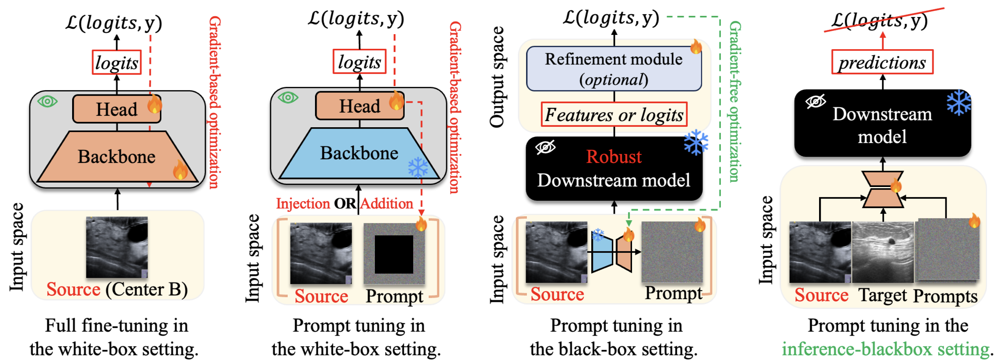
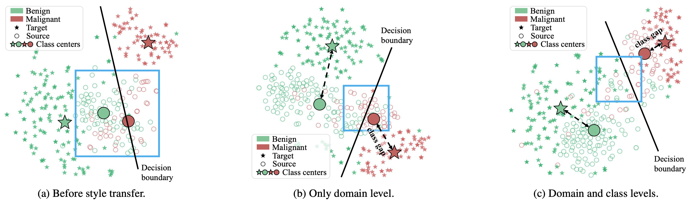

üìù Abstract
The appearance of ultrasound images varies across acquisition devices, causing domain shifts that degrade the performance of fixed black-box downstream inference models when reused. To mitigate this issue, it is practical to develop unpaired image translation (UIT) methods that effectively align the statistical distributions between source and target domains, particularly under the constraint of a reused inference-blackbox setting. However, existing UIT approaches often overlook class-specific semantic alignment during domain adaptation, resulting in misaligned content-class mappings that can impair diagnostic accuracy. To address this limitation, we propose UI-Styler, a novel ultrasound-specific, class-aware image style transfer framework. UI-Styler leverages a pattern-matching mechanism to transfer texture patterns embedded in the target images onto source images while preserving the source structural content. In addition, we introduce a class-aware prompting strategy guided by pseudo labels of the target domain, which enforces accurate semantic alignment with diagnostic categories.
üìò Methodology
üß™ Inference-Blackbox Setting
To overcome the dependence on downstream models — such as requiring model parameters to compute backpropagation gradients (i.e., full fine-tuning and prompt tuning in the white-box setting), or the downstream model must provide features or logits for computing the loss function (i.e., prompt tuning in the black-box setting). In this work, we focus on the practical inference-blackbox setting, where only predictions are available.
üèóÔ∏è UI-Styler Architecture
Top-left: Overview of UI-Styler for ultrasound image translation under an inference-blackbox setting. It performs dual-level stylization with a prompt set, while the black-box model remains frozen for final predictions.
Bottom: Details of the proposed dual-level stylization module. At the domain level, the source domain is aligned toward the target domain via style transfer. At the category level, a class-specific prompt is selected from the template set to guide stylized features toward the corresponding class.
Top-right: The template prompts are optimized in the target domain using pseudo labels, which are generated by the black-box model.

üß™ Experiments
We use four public ultrasound datasets: BUSBRA, BUSI, UCLM, UDIAT. See DATASET.md for download and preprocessing.
üìä Quantitative Results

Feature Space Visualization
(a) No style transfer: Benign and malignant source features overlap, causing misclassification (see blue square).
(b) Domain-level stylization only: Reduces the domain gap, but class information is missing; features remain ambiguous near the decision boundary.
(c) Dual-level stylization with UI-Styler: Injecting class-specific prompts aligns source features with correct class centers, reducing inter-class confusion and improving boundary separation.
Feature Space. We visualize the feature distributions using t-SNE (t-SNE reference) on the UDIAT→UCLM task. Each point represents a sample: green for benign and red for malignant. ★ indicates target samples (UCLM), while ○ denotes source samples (UDIAT) under three conditions— (a) before translation, (b) after domain-level alignment only, and (c) after full dual-level stylization by UI-Styler.
Confidence Scores
Higher medians and tighter boxes indicate more confident predictions

Visual Results
BUSI → UCLM
UCLM → BUSBRA

BUSBRA → UDIAT

UDIAT → BUSI

üíå Acknowledgment
I owe my deepest gratitude to my advisor, Professor Ching-Chun Huang, whose steady guidance and insightful suggestions have shaped not only this work but also my way of thinking as a researcher. I am also sincerely thankful to my labmate, Ngoc-Hoang-Lam Le, for countless thoughtful discussions and generous support that carried me through difficult moments. Finally, this work would not have been possible without the nurturing environment of the Applied Computing and Multimedia Lab (ACM Lab), which has been both a home of knowledge and a source of inspiration.
üåü From the bottom of my heart ‚Äî Thank you very much! ˨ù˨ù!